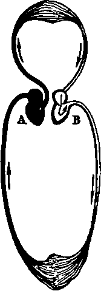

Pulmonary Circulation
Description
This section is from the book "Wonders Of The Human Body", by Auguste Le Pileur. Also available from Amazon: Wonders of the Human Body.
Pulmonary Circulation
The right ventricle contracts, and the flood of venous blood closes the tricuspid valve, and passes into the pulmonary artery. This artery and all its ramifications contain black or venous blood, while the pulmonary veins, as we shall soon see, convey red or arterial blood; it is therefore to their direction, from the heart to the lungs, or from the lungs to the heart, that the vessels of the pulmonary circulation owe their names. The pulmonary artery, like the aorta, is provided at its orifice with three valves, called sigmoid or semi-lunar valves. From the right ventricle to the ramifications of the pulmonary artery the blood has but a short distance to pass, and it meets with no resistance at all comparable to that encountered in the systemic arterial circulation. The walls of the right ventricle therefore are much thinner than those of the left, and consequently have less power. In the capillaries of the lungs the motion of the blood varies in quickness according as the respiration is easy, or retarded by any obstacle, or by the presence of an unfit for the performance of the respiratory functions. The capillaries are distributed through the substance of the lungs in such a manner that they correspond to the pulmonary cells. (See Respiration, p. 92.) It is in these ultimate divisions of the lungs that the oxygen of the air combines with the venous blood charged with carbonic acid, and transforms it into arterial blood. The reddish-brown globules of the venous blood take a vermilion colour from contact with the oxygen, and charged with oxygen, the blood penetrates into the radicles of the pulmonary veins, obeying the original impulse, the vis tergo, as in the general venous system, but with greater quickness. It is now carried back to the left auricle, which immediately transmits it to the ventricle, where its circular course ends, only to commence again immediately. The circulation may be divided into two simultaneous periods, or, as has been already stated, the imaginary circle through which the blood passes is composed of two unequal segments described by the fluid column. The upper segment indicates the pulmonary or lesser circulation, the lower the general or systemic circulation.
Fig. 38. Imaginary diagram of the course of the blood in the circulation.
A. Course of the venous blood.
B. Course of the arterial blood.
Influences which retard or accelerate the beating of the heart. —In an adult in a normal condition, the heart beats about sixty times a minute, and the pulse consequently indicates the same number of pulsations, but diverse causes may augment or diminish the frequency of these movements. They become more frequent during digestion, and under the influence of alcohol, coffee, or other excitants; abstinence, on the contrary, retards them. Intellectual labour also accelerates the action of the heart, but the heart is calmer during sleep, and shares in a measure the repose of the other organs. An unlooked for sight, a word striking the ear, or a thought crossing the mind, will cause strong and rapid pulsations. Eristratus discovered the cause of the malady which threatened the life of Antiochus, by placing his hand on the heart of the young prince at the moment that Stratonicea appeared before him. The pulse is accelerated also by muscular exercise, and by violent efforts. But in this case the cause is complex, for the respiration is also more frequent, and this function is one of those which have most influence on the circulation. In ordinary breathing, each inspiration gives more force to the blood in the arteries, and if the respiration becomes more hurried it is recognizable in the pulse. If, on the contrary, respiration is suspended or imperfect, the circulation is retarded, and the pulse beats with less force; in a word, in most physiological conditions there is a constant relation between the respiratory movements and the beating of the heart The alternate expansion and contraction of the walls of the chest are therefore one of the principal causes which affect the circulation, by facilitating the afflux of blood to the thoracic cavity and insuring its expulsion from it.
The pressure of the atmosphere also influences the beating of the heart, but only under certain conditions. It is not uncommon to find in the high valleys among the Alps men whose pulse beats between fifty and sixty times a minute—this infrequency is perhaps more common among mountaineers who live at an altitude of 3280 feet or more, than in less elevated countries. We may consider therefore that the altitude has no influence upon persons who have long lived at a given level. But if we rise rapidly to a great height, the pulse quickens very sensibly. Aerostatic ascensions and mountain journeys furnish the proof of this. It is not to locomotion or to muscular effort that this quickening of the pulse can be attributed in the aeronaut or the traveller on horseback, but it is chiefly due to the greater frequency of respiration in an atmosphere of lesser density. The diminution of the pressure of the atmosphere conduces also to the same effect by relaxing the vessels; but the fall in temperature in proportion to the rise in elevation seems to neutralize this last effect by the contraction of the tissues which it induces. (See Respiration, p. 99).
The establishment of the fact, that an increase in the pressure of the atmosphere diminishes the frequency of the pulse is due to the observations of Pravaz and Tabarie. Both these authors state that the pulse falls to fifty and even to forty-five pulsations per minute when the subjects are placed in an apparatus for compressing air, and the pressure is increased to that of two atmospheres and over. Results entirely contrary were observed by M. Francois in the tubes containing compressed air which he used in building the bridge at Kehl in 1860. This physician observed that the pulse invariably quickened in the labourers employed upon this work under a pressure of about two atmospheres. Other observations by M. Hermel establish the fact that the pulse is sometimes retarded, and sometimes quickened in compressed air to one hundred and fifty in a minute. The phenomena observed in men who work in compressed air seem to be due to complex causes, among which we must note the vitiation of the air from deficient renewal.
We shall not here discuss the numerous causes which may, in pathological conditions, influence the circulation.
Continue to: